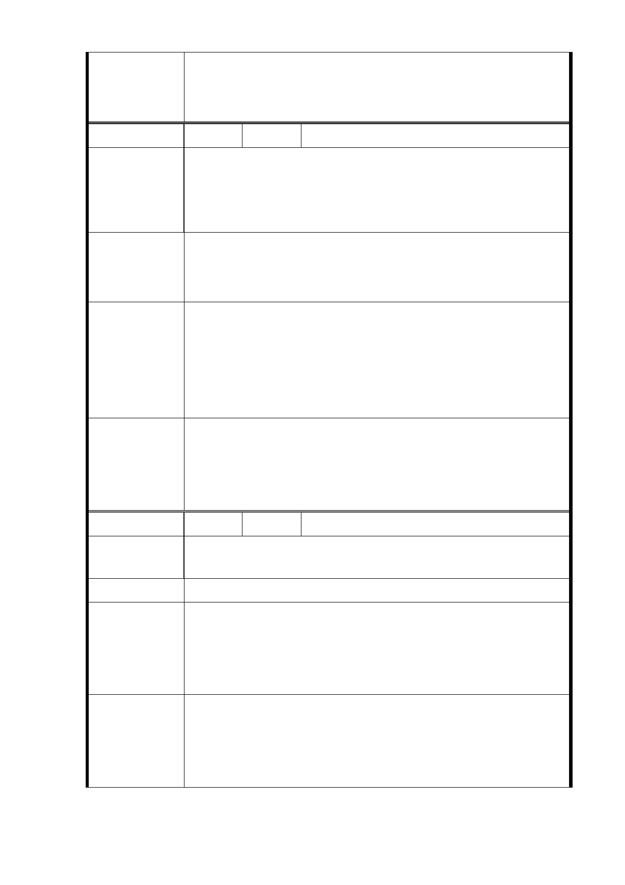

2. 本案一、二樓層應作為公共服務，包括托幼、公共保母
中心、社區圖書館等社福及教育等公共服務使用，以及
社區零售、青年創業等，並不得作為住宅使用。
編 號 6 陳情人 邱聰智
原校園建築仍可使用，不應浪費將其打掉另作他用。目前大
同區 0～6 歲可照料人數 9000 多人，光是明倫國小周邊 5
陳 情 理 由 個里需規劃照料有 2000 多人。
請將校園留下用於 0～6 歲兒童上課學習場所。
中繼宅可用現今明倫旁的台北市就業輔導處，或年底收回的
建 議 辦 法 劍潭活動中心。一舉兩得，何樂不為？教育乃是柯市長選舉
時的重要〝施政〞！請三思！
1. 明倫國小校舍狀況，同編號 5-1。
2. 設置托幼需求，同編號 5-2。
市府回應
3. 至本計畫區北側就業服務處及東北側原劍潭青年活動
說明
中心一節，未來將規劃作「北區轉運站」及「劍潭濕地
公園」，經評估尚無作公共住宅基地之規劃。
1.依市府回應說明辦理。
2.本案一、二樓層應作為公共服務，包括托幼、公共保母中
委員會決議
心、社區圖書館等社福及教育等公共服務使用，以及社
區零售、青年創業等，並不得作為住宅使用。
編 號 7 陳情人 江佳娟
目前大同區 0～6 歲幼兒有 9000 多人，此校園正符合幼兒照
陳 情 理 由 料場所，建議將明倫校園改成幼兒照顧中心。
建 議 辦 法 花博有許多未使用空間，為何不考慮用於中繼住宅使用。
1. 設置托幼需求，同編號 5-2。
市 府 回 應 2. 花博公園城博聚落、美術園區、產創園區，現刻由本府
說 明 納入北區門戶計畫案內，以地區發展為考量，整體規劃
設計中。
1.依市府回應說明辦理。
2.本案一、二樓層應作為公共服務，包括托幼、公共保母中
委員會決議
心、社區圖書館等社福及教育等公共服務使用，以及社
區零售、青年創業等，並不得作為住宅使用。
9